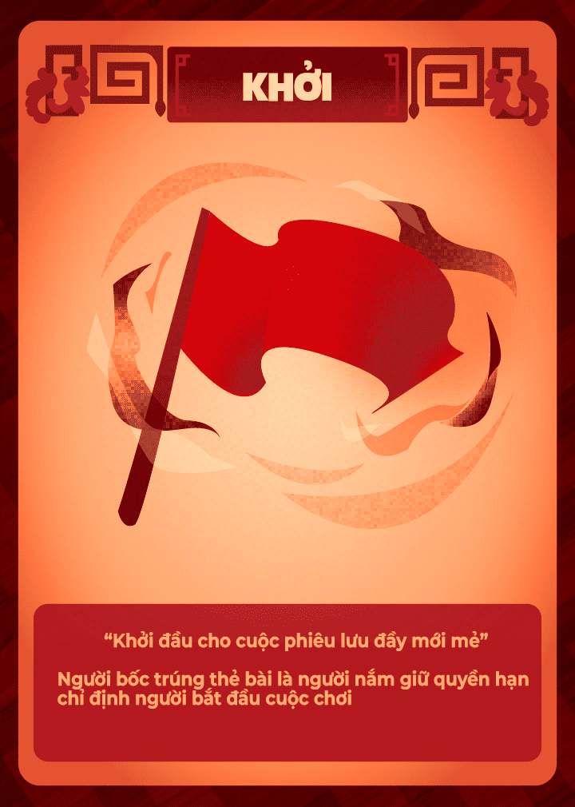
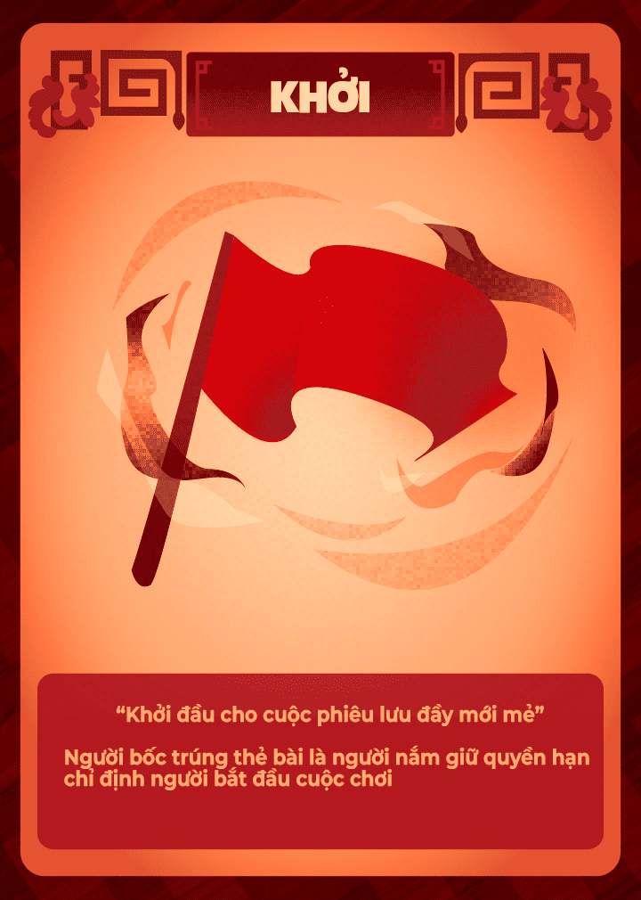
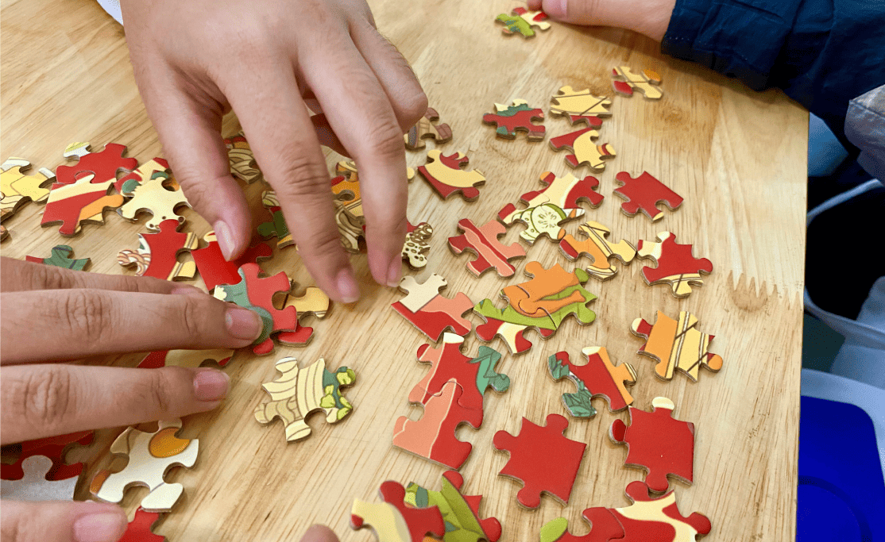
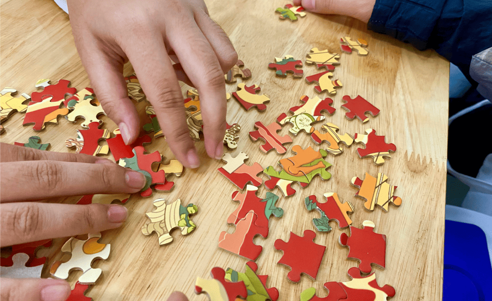

SON PROJECT
Product Design - Business Fundraising Campaign
.png)
Project Overview
The "Son Project" is an innovative initiative created with the goal of spreading the beauty of Vietnamese food culture through an engaging business campaign. The project centers around a unique board game puzzle called "Ẩm thực Việt", highlighting the country’s special cuisines. With the proceeds from game sales, the campaign aims to support Hồ Chí Minh City Children's Hospital 1 (Vietnam), ensuring that the project not only educates people about Vietnam’s rich culinary heritage but also contributes to the social good.
My Artwork
(Click on each image to view it in full size.)
I am the Vice President and Co-founder of the Son Project, where I lead the Production Development section, overseeing the entire process from concept to execution.
In addition, I serve as the Art Director, responsible for shaping the creative direction and visual identity of the project.
I also contributed as one of seven Product Designers and individually took on the role of a 3D Visualizer.
The images below illustrate the design process I undertook to create the promotional campaign for the Son Project, which includes a board game puzzle, the package and a set of feature cards.
DESIGN PROCESS
As shown above, this promotional campaign was developed entirely in Blender, showcasing a full 3D design and rendering workflow. I started by modeling custom shapes using Blender’s mesh editing tools, then created base materials in Adobe Illustrator to establish a strong visual foundation. These materials were enhanced with a mix of procedural and image-based textures for added depth and realism. Lighting played a key role in each scene, using a four-point setup—key, fill, area, and ring lights—individually adjusted for color, intensity, and shadow quality. Final renders were produced in the Cycles engine for a high level of photorealism. To complete the process, I fine-tuned the images in Adobe Lightroom, focusing on color correction and subtle visual enhancements to ensure a polished, professional finish.
The following showcases the final outcome of the design process.


 


Inspired by Vietnam’s rich culinary heritage, this puzzle board game showcases iconic dishes from north to south, with feature cards adding layers of strategic depth. The logo, designed in Adobe Illustrator, incorporates the traditional Vietnamese Hồi Văn pattern and reflects the campaign’s title, "Son"—a word symbolizing wholeheartedness, drawn from the phrase “Sắc Son.” This meaning is visually embedded in the logo’s form, while the wood-textured background evokes the timeless craftsmanship of traditional Vietnamese carpentry.
Son Project logo taking inspiration from “Hồi Văn” pattern
Public Response to the Project and Art
The promotional campaign successfully reached a wide audience—primarily high school students, university students, and young people. This outreach generated over 5 million VND in profit, enabling the project to support more than 50 underprivileged children at Ho Chi Minh City Hospital with gift packages that included stuffed animals, candies, milk, and cookies. Additionally, several board games were gifted to children who are family and friends of project members, with the aim of providing educational value and encouraging quality time with loved ones.
I'm proud to have led the project and contributed as a member of the design team, helping shape both the visual identity and the heart of a project that made a meaningful difference in the lives of many.
 
